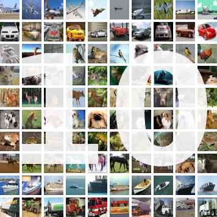
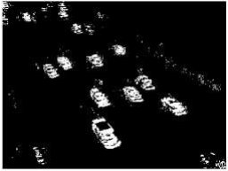
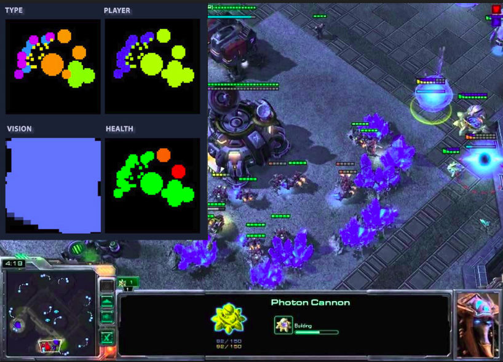
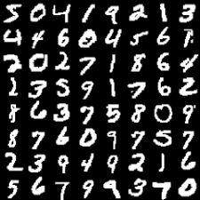
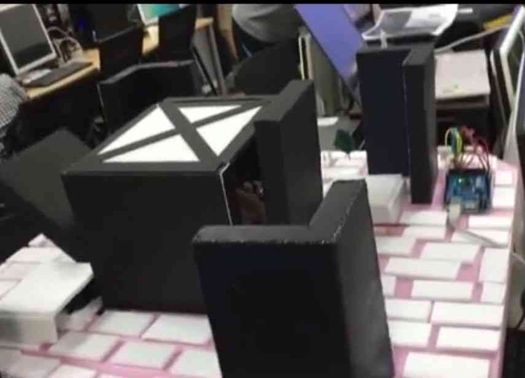
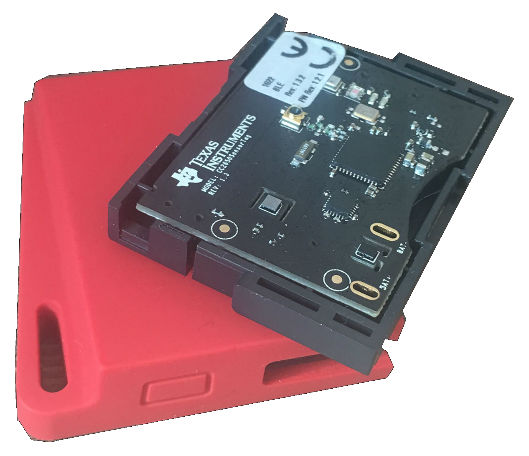
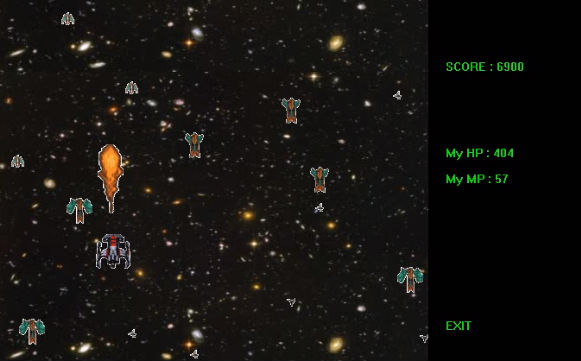

I'm currently working with
Ada Gavrilovska and
Alexey Tumanov
The three words describing myself: Passionate,
Interactive, Productive!
My resume is available here.
Sajjad Taheri, Jin Heo, Payman Behnam, Jeffrey Chen, Alexander Veidenbaum, Alexandru Nicolau, Field-Programmable Custom Computing Machines (FCCM), 2018 IEEE 26th Annual International Symposium on. IEEE, 2018
Paper Link
Jin Heo, WonKyo Choi, JaeMan Son, HunChul Park, DaeGyun Yoon, Proceedings of Symposium of the Korean Institute of Communications and Information Sciences, 2018.6, 914-915(2 pages)
Paper Link
Hankki is the web-based hosting service. It is developed by TDD; test coverage 47%. Each server computer can sustain 500 transactions per second. A payment system is also implemented.
Technical stack: Flask, Jinja, SQLAlchemy, Postgresql, Gunicorn, Nginx, Docker, Docker compose, Semantic UI

Cifar10 data set is consisted of 32x32 50K training images and 10K testing images. The restriction is that the deep learning model should be less than equal to 10 layers. For making the best performance within 10 layers, tuning hyperparameters and input augmentation is applied. I also implemented ResNet of 10 layers but the performance is lower than 9 layer CNN because of the characteristic of ResNet.
Technical stack: Pytorch, Google Collaboratory, CuDNN

With a given video, the object detector is implemented by the background subtraction algorithm. Weighted sum of the images creates the background image and the each video frame is subtracted from the background image. The performance is calculated based on sensitivity and specificity.
Technical stack: OpenCV-python

Recently, Google DeepMind and Blizzard Entertainment release the SC2 AI packages for python. The Q-learning is developed by using the pySC2, the python package for StarCraft II. Markov decision process is examined for this project. This project is closed because of the shortage of resource(Out of Memory problem)
Technical stack: PySC2, Starcraft II API for C++

MNIST is the basic dataset for ML beginner. It is consisted of 55K training data, 10K testing data, and 5K validation data. In this project, only 10K training data are used. To improve the performace of the CNN classifier, additional 40K training data are created by input augmentation technique with 10K data.
Technical stack: Tensorflow, CuDNN

When sensors recognize the threats nearby, the house is protected by a bunker automatically. The camera inputs and the status information are shown on the control board. The controll board is connected to the backend server and it is possible to control the system remotely by an Android application.
Technical stack: Embedded C programming, Android, MongoDB, Signal processing

In Wireless Sensor Network, low power communication is essential since the cost of communication is huge. Glossy is an efficient flooding method. Glossy makes use of constructive interference of signals and requires strict scheduling of sensors
Technical stack: Contiki OS, Ti Sensortag, Network protocols, Cross compiling

I implemented 2D shooting game. The image resource comes from StarCraft I.
Technical stack: Windows API, Object Oriented Programming